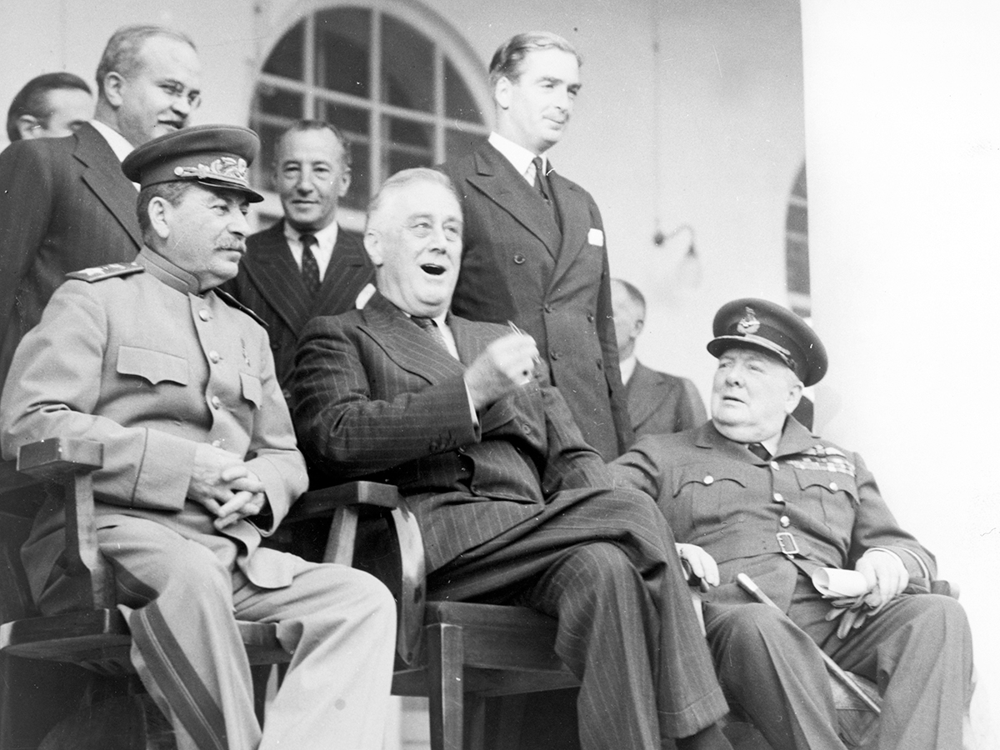

The president directs US foreign policy and decides how it’s carried out toward other countries in the world.

While the president takes the lead on his or her power in foreign affairs, this power may be limited by specific laws passed by Congress. For example, Congress could pass a law limiting foreign aid to specific countries.
Ambassadors are official representatives of the United States to other countries who are appointed by the president with Senate approval.
Ambassadors are interesting because of the reasons for appointing them to various posts. Ambassadorships to close allies or countries where there’s little at stake tend to go to campaign supporters and the president’s allies regardless of suitability. These positions are seen as rewards for loyalty and political support. In areas where the United States faces serious adversaries or important strategic allies, most presidents tend to appoint trained and experienced diplomats.